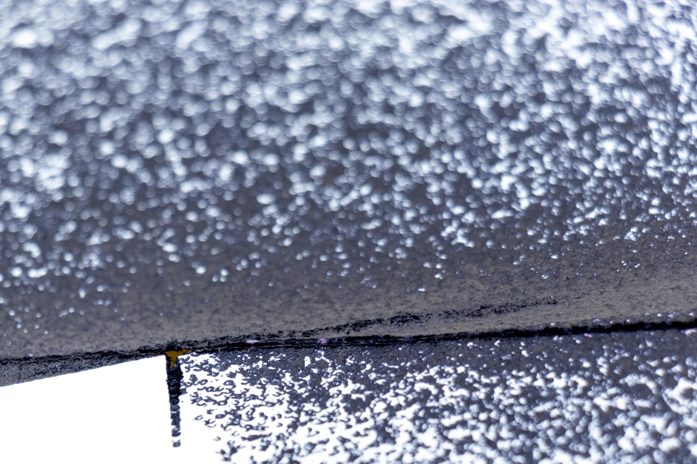

Skinned Up Knee 1972
Skinned Up Knee 1972
Skinned Up Knee 1972
Skinned Up Knee 1972
Skinned Up Knee 1973
Skinned Up Knee 1972
Skinned Up Knee 1972
arrow_downward- An HTML poem by OpenAi's GPT-3 Codex AI.
<!DOCTYPE html>
<html>
<head>
<meta name="ich hab mein knie geknicks und gebe das meine sicherheit weg" >
</head>
<body>
<b>A Poem about ich hab mein Knie aufgeschlagen</b>
<?php
echo "Mein Knie ist aufgeschlagen";
echo "<br/>";
echo "Jetzt blutet es sehr stark";
echo "<br/>";
echo "Jetzt ist mein Knie geknicks";
echo "<br/>";
echo "Meine Knie ist schwach und wund";
echo "<br/>";
echo "Jetzt muss ich es mit tape umwickeln";
?>
</body>
</html>
Skinned Up Knee 1972 contains related works, partly physically and technologically interconnected, partly only ideally. Time, stopped, ever flowing or controlled by the viewers' action plays an integral role in all of them. The most prominent work is Olympic Strampler, an old fitness bike for visitors to ride and to control the playback of rain footage on two mid-2000s flatscreens. Then, there's Perpetual das Vesper, an immersion heater equipped with periphery to sustain light boiling indefinitely, supplied with fresh water by a thin 20 meter hose that leads from lavatory to exhibition room. Plastic Lunge always breathes, emptying one plastic bag and filling the other and letting the process reverse in between individual breaths. Its breathing tempo is influenced by the frequency of the visitors' movements on Olympic Strampler though, linking control abilities with perpetual motion.
The two pen plottings, Kitchen Dweller and Error Space are only thematically related to the rest of the exhibition, exploring misuse of the pen-plotter by effectively humanising it (Kitchen Dweller) and time cosumingly plotting over 48000 points generated by a programming error, destroying the medium in the way (Error Space).
Feelings and representations of the exhibition have been colected on this website. Some of the cloudy 3D-worlds that are ready for fly-through here show moments in the works' production processes. Others may seem unrelated in their depiction of disconnected situations - they display everyday moments during the artworks' creation frozen in time. In a similar way of commenting art with art, the two HTML-Poems on this webpage try to obtain a second opinion on the time-related angst from OpenAI's GPT-3 Codex
press enter
<!DOCTYPE html>
<html>
<head>
<meta name="zeit zeit keine gnade fur die knie" content="width=device-width, initial-scale=1">
</head>
<body>
<h3> A poem about Zeit</h3>
<h1> zeit zeit keine gnade fur die knie</h1>
ein ganzer Donnerstag im Bett<br><br>
nicht nur das Krumme posten sich auch<br><br>
die Knie und <br> <br>
warten aufs erbarmen der Erdbeschleunigung auf einen Stein.<br><br>
"Zwei Schrauben ungleicher Länge: Eine für dich." <br><br>
Und du versuchst es mit allen Tricks. Du zündest den Firlefanz ab<br><br>
und verkaufst die Reste an Firmen, die daraus neue Zündschnur machen.<br><br>
Du schluckst jeden Schnulzenquatsch auf Youtube <br><br>
und hältst einen Vortrag über ganz andere Themen, als deine Fortschrittskurve am Montagmorgen zeigt.<br><br>
Oder? Wir sind hier nicht bei "Die Welt" oder in der "Welt
<?php
echo 'Tafeln sind voll';
echo "Keine Tafeln";
echo "Zeit keine Gnade";
?>
</body>
</html>
- An HTML poem by OpenAi's GPT-3 Codex AI.
Perpetual das Vesper is the result of the attempt to display the (now challenged for the first time in 30 years) historical oddness of an energy grid that is available and working 24/7. The installation determines its own water requirements and refills the cooking glass to a sufficient amount of water for the heater to not overheat. On the other hand, it is always on the brink of failure: the immersion heater has a temperature dependent one-time fuse. Any disruption in the water supply would therefore destroy the installation irrecoverably.
Error Space, a 122cm x 86cm pen plotting, was originally an attempt to render a digital drawing of an imaginary suspended roof in reminiscence of Frei Ottos roof of the 1972 Munich Olympic Arena. While transforming the shadows into plotter-friendly dots, an error in the rendering code resulted in a vector drawing with about 48000 points. Making a pen-plotter plot 48000 dots takes about 72 hours and 4 Pilot G-Tec C4 gel pens. It also rips the medium apart in the areas of the highest point concentration and creates a rough texture in their surroundings which makes the time that went into the process tangible. Listening to the plotter place dot after dot reminds me of the machine in Franz Kafka's "In der Strafkolonie".
Detail of Error Space's dot epicentre. Some of the dots have been moulded together to circles and other geometry by the plotter's path optimization software because their distance was smaller than the smallest possible movement of the device. The resulting, even more aleatoric character reflects the organic forms that - being the basis of the mathematical transformation resulting in the dots - determine this work.
A fitness bike from the 70s that controls video playback on two screens - make it rain! Olympic Strampler is an attempt to connect an object that exists for itself and has a defined purpose to an art installation. To measure an everyday activity and represent it artistically without betraying it, giving visitors a chance to engage in a forged alltag.
Olympic Strampler
Plastic Lunge is an extension and/or reflection of Perpetual das Vesper's idea. It mimics breathing, one of the most basic human activities and does so perpetually (but at an elevated rate if someone is driving Olympic Strampler).